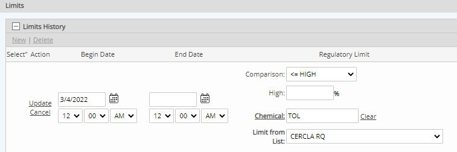

Regulatory limits on a Material Activity Calculated Requirement may reference values stored on a chemical regulatory list.
To set the regulatory limit to reference a Chemical List:
Click the plus sign (+) to expand the Limits section, then click New to define a new limit.
Click Chemical to select the chemical to monitored. Select the chemical from the selection window.
Select the Comparison, then enter the percentage of the regulatory list value to use for the limit.
You may set both Regulatory and Internal limits, as desired.
Click Update to save the limit history value.
